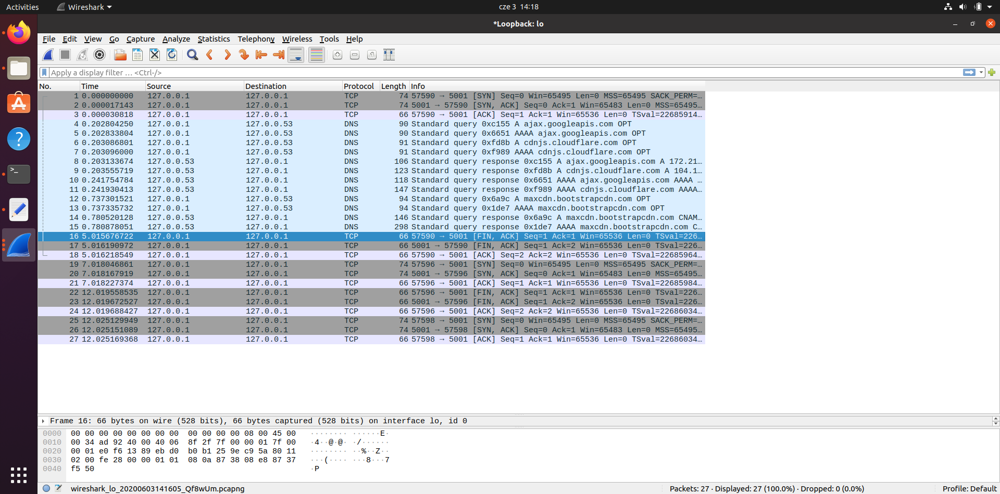

Przechwytywanie komunikatów za pmocą programu Whireshark:
Port przeglądarki: 57590, Port serwera: 5001
-wywołanie strony głównej
-ładowanie skryptów bootstrapowych
-przejście do pierwszej podstrony
-przejście do drugiej podstrony
-powrót do strony głównej